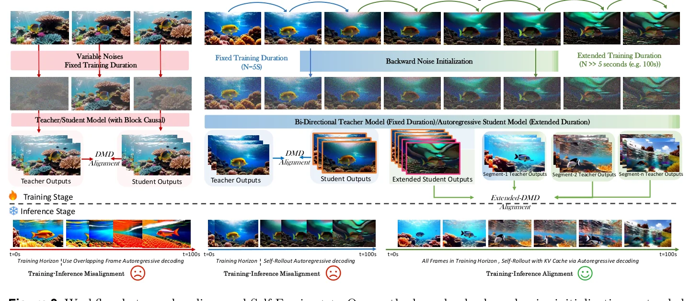
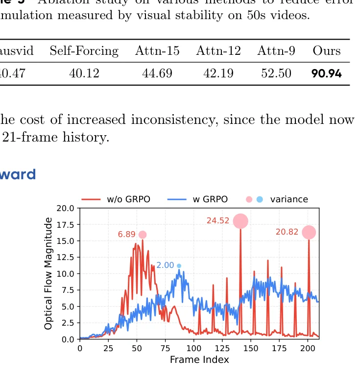
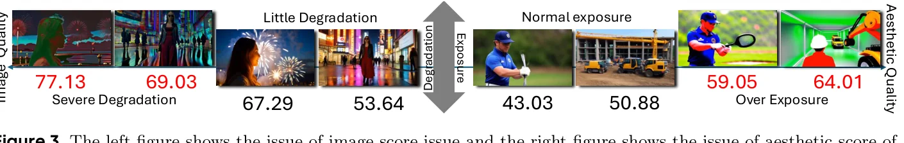
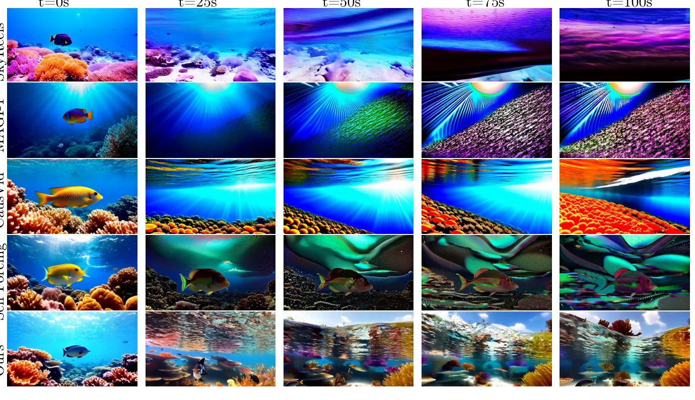
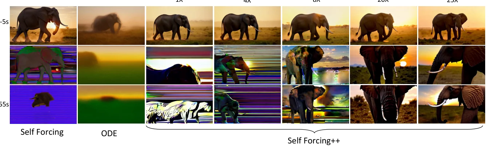

长视频生成的 Horizon Scaling 瓶颈
扩散Transformer（DiT）架构虽然在图像和短视频生成中取得了突破性进展，但其双向注意力机制天然不支持流式生成，绝大多数SOTA模型被限制在5-10秒的短视频范围内。为突破这一限制，研究者们探索了将双向教师模型蒸馏为自回归学生模型的技术路径。

技术路径演进：CausVid → Self-Forcing → Self-Forcing++
CausVid
推理使用KV Cache但训练仍依赖重叠帧重计算。训练-推理不匹配导致过曝光问题，时间一致性差
Self-Forcing
训练时引入KV Cache对齐训练推理，消除过曝光。但训练被限制在5秒教师视野内，超出后质量急剧下降
Self-Forcing++
训练时扩展到N≫5秒，用滚动KV Cache + 反向噪声初始化 + 扩展DMD，实现255秒高质量生成
双重训练-推理失配
Self-Forcing++论文揭示了一个关键洞察：限制自回归长视频生成质量的核心障碍是双重训练-推理失配。
时间失配：训练时模型仅生成5秒视频（教师最大视野），推理时却需生成100秒以上。模型从未见过"5秒之后"的世界。
监督失配：训练时教师对每一帧提供密集监督，学生很少暴露于长rollout中自然产生的复合误差。这导致学生模型缺乏"从错误中恢复"的能力。
论文的一个关键观察是：超出训练视野的rollout仍保持结构连贯性，即使这种连贯性表现为运动停滞等不理想伪影。这说明自回归机制本身（通过KV Cache维护上下文）是有效的，真正的问题是复合误差在连续latent空间的放大。这一洞察直接启发了"让学生在自身长rollout上学习恢复"的核心策略。
Backward Noise Initialization — 反向噪声初始化
将学生-教师蒸馏从短视野扩展到长视野时，一个核心挑战是噪声初始化策略。在短视野设置中（视频长度≤T帧），学生可以直接在教师采样的完整轨迹上监督，每条轨迹从随机噪声出发。但在长视野生成中，从纯随机噪声出发的轨迹与前文内容脱耦，导致根本性的上下文失配。
公式推导
Self-Forcing++的核心创新是：先让学生模型自展开生成N帧干净轨迹（N≫T），然后根据扩散噪声调度将噪声重新注入已去噪的latent向量：
其中 $\epsilon \sim \mathcal{N}(0, \mathbf{I})$ 为高斯噪声，$\hat{\epsilon}_\theta$ 为参数化的噪声预测网络，$x_0$ 通过学生模型的上一步预测计算得到。这个加噪后的 $x_t$ 同时作为教师和学生模型分布计算的起始状态。
标准前向加噪 $\ x_t = (1-\sigma_t)x_0 + \sigma_t\epsilon\ $ 中的 $x_0$ 如果是从随机噪声出发生成的，则与前面已生成的内容无关。而Self-Forcing++的 $x_0 = x_{t-1} - \sigma_{t-1}\hat{\epsilon}_\theta(x_{t-1}, t-1)$ 是从学生模型自身长rollout中提取的帧，天然保持了与前文的时间依赖性。重新加噪后，教师和学生都在"含有前文信息"的噪声上做分布匹配，确保了长视频的时序一致性。
与已有方法的区别
虽然类似的"重新注入噪声"技术在先前工作中已被使用（如DMD2、CausVid、Self-Forcing），但Self-Forcing++的动机和应用场景截然不同：
| 方法 | 噪声注入用途 | 训练视野 | 动机 |
|---|---|---|---|
| DMD2 | 增强单次生成质量 | 单张图片 | 避免需要真实训练数据 |
| CausVid | 短视频蒸馏 | 5秒 | 提升蒸馏效率 |
| Self-Forcing | 对齐训练推理 | 5秒 | 消除过曝光 |
| Self-Forcing++ | 维持长视频时序一致性 | N≫5秒(100秒+) | 跨段上下文对齐 |
一个自然的疑问是：为什么不直接让学生在长rollout的每一帧上计算DMD loss？答案是计算成本。对100秒视频的每一帧都做教师前向传播是不现实的。滑动窗口采样（Step 2）巧妙地解决了这个问题：每次训练迭代只需对K≈5秒的窗口做分布匹配，但窗口的位置在N=100秒的rollout中随机变化，使模型逐步学会在不同时间段纠正误差。
Extended DMD — 扩展分布匹配蒸馏
标准DMD（Distribution Matching Distillation）通过最小化学生与教师分布之间的反向KL散度来蒸馏模型。然而，Self-Forcing等方法的训练被限制在教师模型能可靠生成的5秒窗口内，导致学生模型在超出此范围时质量急剧下降。
标准DMD回顾
其中 $s_{\text{real}}$ 和 $s_{\text{fake}}$ 分别是教师（real score）和学生蒸馏模型（fake score）的分数函数，$G_\theta(z)$ 是学生生成器，$\Phi(\cdot, t)$ 是时间步 $t$ 的变换过程。
扩展DMD：滑动窗口策略
Self-Forcing++的核心扩展是：让学生模型先rollout到N帧（N≫T），然后从生成的序列中均匀采样一个长度为K的连续窗口，在该窗口内计算学生与教师的分布差异：
其中 $G_\theta(z)$ 表示给定latent $z$ 的学生生成器rollout，$i \sim \text{Unif}\{0, \ldots, N-K\}$ 是从长度为N的rollout中均匀采样的起始索引，提取长度为K的窗口。窗口大小K通常选择与教师模型原始训练视野一致。
Extended DMD的理论基础来自一个关键假设：虽然教师模型仅在5秒片段上训练，但它从海量视频语料中隐式捕获了"世界"的底层数据分布。因此，任何短的连续视频片段都可以看作是某个有效长视频序列的边际分布的采样（Alonso et al., 2024; Bruce et al., 2024; Li et al., 2025）。这意味着教师可以在长rollout的任意局部窗口上提供有效监督，无需自己能生成长视频。
Remark：双向扩散的自回归适配
论文的Remark指出："双向扩散可以看作是在不同去噪时间步渐进修复退化目标的过程。我们的方法将这一思想适配到自回归视频生成范式中——让短视野教师在不同的时间帧上渐进修复学生的退化rollout，然后将这些纠正知识蒸馏回学生模型。" 这个类比揭示了Extended DMD的本质：教师不是在"生成"长视频，而是在"修复"学生长rollout中的局部退化。
Rolling KV Cache — 训练推理统一
KV Cache是自回归视频生成的核心效率机制。然而，先前方法在训练和推理之间的Cache使用方式不一致，导致了严重的不匹配问题。
三代方法的KV Cache对比
| 方法 | 训练时Cache | 推理时Cache | 不匹配? | 后果 |
|---|---|---|---|---|
| CausVid | 重叠帧重计算 | 使用KV Cache | 是 | 过曝光、效率低 |
| Self-Forcing | 固定Cache + 首帧masking | 滚动Cache | 部分 | 误差累积、时序闪烁 |
| Self-Forcing++ | 滚动Cache | 滚动Cache | 否 ✓ | 无需masking，自然消除 |
Self-Forcing试图通过在训练时使用固定Cache + masking第一帧来部分缓解不匹配。但这只解决了Cache状态的不一致，没有解决视野长度的不一致——训练时仍是5秒，推理时却是100秒。Self-Forcing++通过在训练时也使用滚动Cache并扩展到N帧rollout，同时解决了状态和长度两个维度的不匹配，从根本上消除了train-inference gap。
Self-Forcing++的Cache设计哲学是"自然消除"而非"人为修补"。不需要latent frame masking，不需要重叠帧重计算，不需要attention sink frames（不同于LongLive和Rolling Forcing）。训练和推理使用完全相同的滚动Cache逻辑，这种一致性使模型在训练时学到的能力可以直接迁移到推理。论文超参：滚动窗口大小为21个latent帧（≈5秒）。
GRPO with Optical Flow Reward
使用滑动窗口或稀疏注意力的生成模型在长序列生成中存在一个普遍问题：长程记忆的逐渐丢失。这表现为物体突然出现/消失或不自然的快速场景切换。Self-Forcing++展示了GRPO（Group Relative Policy Optimization）可以有效缓解这一现象。
GRPO目标函数
其中重要性权重 $\rho_{t,i} = \frac{\pi_\theta(a_{t,i} | s_{t,i})}{\pi_{\theta_{\text{old}}}(a_{t,i} | s_{t,i})}$，$\pi_\theta(a_{t,i}|s_{t,i})$ 表示时间步 $t$ 输出 $o_i$ 的策略函数，$\epsilon$ 是裁剪超参数。
优势 $A_i$ 在一组 $G$ 个输出中计算，实现了组内相对比较，消除了对独立价值网络的需求。
生成视频的概率分解
为了将GRPO适配到自回归视频生成，论文推导了生成视频的log概率：
其中 $x_{0,i}^{(n)}$ 根据Eq(1)计算（条件于之前生成的样本 $x_{\lt n}$），$D$ 是latent维度，$T$ 是非终止采样步数，$N$ 是自回归步数。
光流奖励
论文使用相邻帧光流幅度的相对大小作为运动连续性的代理奖励。光流幅度的突变（spikes）标志着不自然的场景切换：

GRPO从LLM迁移到视频生成面临独特挑战。DanceGRPO首次在多种生成范式上实现稳定策略优化，而GRPO-Guard揭示了重要性比值clip机制的系统性偏差——均值长期低于1导致过度自信正梯度。Self-Forcing++的GRPO使用光流作为奖励信号，巧妙地避开了复杂奖励建模，但其长期稳定性和过度优化风险仍需关注。论文也指出GRPO是可选的增强，不加GRPO的模型已能生成高质量长视频。
Visual Stability — 长视频评估新范式
Self-Forcing++论文发现广泛使用的VBench基准在长视频评估中存在系统性偏差，高估了过曝光和退化的视频帧。

VBench评估偏差的具体表现
| 场景 | 方法 | VBench评分 | 实际情况 |
|---|---|---|---|
| 过曝光 | CausVid | 53.64-61.56 | 严重过曝光，运动停滞 |
| 退化 | Self-Forcing | 40.12-61.06 | 全局变暗，运动停滞 |
| 正常 | Self-Forcing++ | 90.94 | 亮度稳定，运动连贯 |
Gemini-2.5-Pro评估协议
论文采用Gemini-2.5-Pro作为评估器，定义了长视频的关键问题（过曝光和误差累积），设计0-5评分量表：
评分聚合到0-100尺度称为Visual Stability。为确保与人类判断一致，20个随机采样的MovieGen视频由两位作者独立标注，50秒视频的Spearman秩相关达到100%（Top-3方法），所有6个基线为94.2%。
VBench的imaging quality和aesthetic quality指标使用过时的评估模型，这些模型倾向于给高对比度但细节丢失的过曝帧打高分。对于短视频（5秒），这种偏差尚可容忍；但在长视频中，过曝和退化是累积的，VBench的偏差被放大。Visual Stability指标通过Gemini-2.5-Pro的推理能力，能够理解"整体曝光稳定性"而非单帧质量，这更符合人类对长视频质量的感知。
代码实现解析
Self-Forcing++的官方代码尚未发布，但论文明确指出可基于Self-Forcing baseline仓库复现。以下代码实现基于Self-Forcing baseline仓库分析，结合Self-Forcing++论文方法描述。
1. Rolling KV Cache 初始化
def _initialize_kv_cache(self, batch_size, dtype, device):
# 为 Wan 模型初始化 Rolling KV Cache
# 每个Transformer block维护独立的 k/v 张量及双指针
kv_cache = []
if self.local_attn_size != -1:
# Rolling机制核心：local_attn_size 限制注意力窗口
kv_cache_size = self.local_attn_size * self.frame_seq_length
else:
kv_cache_size = 32760 # 默认大小
for _ in range(self.num_transformer_blocks): # 30个block
kv_cache.append({
"k": torch.zeros([batch_size, kv_cache_size, 12, 128],
dtype=dtype, device=device),
"v": torch.zeros([batch_size, kv_cache_size, 12, 128],
dtype=dtype, device=device),
"global_end_index": torch.tensor([0], dtype=torch.long, device=device),
"local_end_index": torch.tensor([0], dtype=torch.long, device=device)
})
self.kv_cache = kv_cache # 始终存储 clean cache设计要点：`global_end_index` / `local_end_index` 双指针实现滚动窗口。`local_attn_size` 限制注意力窗口大小，超出后自动淘汰最旧的KV（FIFO）。Self-Forcing++的关键改进是在训练时也使用相同的滚动逻辑，消除了Self-Forcing中训练用固定Cache、推理用滚动Cache的不匹配。
2. Self-Rollout 训练循环
def inference_with_trajectory(self, noise, **conditional_dict):
# === Self-Forcing++ 扩展：N >> T 帧的rollout ===
# Self-Forcing baseline: num_frames ≈ 21 (5秒)
# Self-Forcing++: num_frames ≈ 420+ (100秒)
num_denoising_steps = len(self.denoising_step_list)
# 随机梯度截断点（跨进程同步）
exit_flags = self.generate_and_sync_list(num_blocks, num_denoising_steps)
start_gradient_frame = num_output_frames - 21 # 只对最后21帧计算梯度
for block_idx, current_frames in enumerate(all_num_frames):
noisy_input = noise[:, start:start+current_frames]
for step_idx, timestep in enumerate(self.denoising_step_list):
exit_flag = (step_idx == exit_flags[block_idx])
if not exit_flag:
# 非退出步：禁用梯度，普通去噪
with torch.no_grad():
_, denoised = self.generator(noisy_input, ...,
kv_cache=self.kv_cache)
noisy_input = self.scheduler.add_noise(denoised, ...)
else:
# 退出步：仅最后21帧保留梯度
if current_start < start_gradient_frame:
with torch.no_grad():
_, denoised = self.generator(...)
else:
_, denoised = self.generator(...) # 保留梯度
break
# 用 context_noise 重新加噪后更新 KV cache
# 这就是 Backward Noise Init 的代码体现！
context_timestep = torch.ones_like(timestep) * self.context_noise
denoised = self.scheduler.add_noise(denoised, ..., context_timestep)
with torch.no_grad():
self.generator(denoised, ..., kv_cache=self.kv_cache)3. DMD Loss 计算
def _compute_kl_grad(self, noisy_latent, estimated_clean, timestep, ...):
# Step 1: fake score (学生蒸馏模型，可训练)
_, pred_fake_cond = self.fake_score(noisy_latent, conditional_dict, timestep)
if self.fake_guidance_scale != 0.0:
_, pred_fake_uncond = self.fake_score(noisy_latent, unconditional_dict, ...)
pred_fake = pred_fake_cond + (pred_fake_cond - pred_fake_uncond) * self.fake_guidance_scale
else:
pred_fake = pred_fake_cond
# Step 2: real score (教师模型，冻结)
_, pred_real_cond = self.real_score(noisy_latent, conditional_dict, ...)
_, pred_real_uncond = self.real_score(noisy_latent, unconditional_dict, ...)
pred_real = pred_real_cond + (pred_real_cond - pred_real_uncond) * self.real_guidance_scale
# Step 3: DMD梯度 = fake_score - real_score (论文Eq.3)
grad = pred_fake - pred_real
# Step 4: 梯度归一化 (论文Eq.8)
p_real = estimated_clean - pred_real
normalizer = torch.abs(p_real).mean(dim=[1,2,3,4], keepdim=True)
grad = grad / normalizer
return torch.nan_to_num(grad)
def compute_dmd_loss(self, image_or_video, ...):
with torch.no_grad():
timestep = self._get_timestep(...)
noise = torch.randn_like(image_or_video)
noisy_latent = self.scheduler.add_noise(image_or_video, noise, timestep).detach()
grad, logs = self._compute_kl_grad(noisy_latent, image_or_video, timestep, ...)
# DMD loss = 0.5 * MSE(x, (x - grad).detach())
dmd_loss = 0.5 * F.mse_loss(image_or_video.double(),
(image_or_video.double() - grad.double()).detach())
return dmd_loss4. Algorithm 1 完整伪代码
# 输入: 学生G_θ, 教师T_ϕ, Cache大小L, rollout长度N≫5s, 窗口长度K(5s), 去噪步{t₁,...,t_T}
loop:
# Step 1: 学生自展开N帧（使用Rolling KV Cache）
V ← Rollout(G_θ, N, L)
# Step 2: 从N帧中均匀采样K长度窗口
i ~ Uniform{1, ..., N-K+1}
W ← V[i : i+K-1]
# Step 3: 采样去噪时间步
t ~ {t₁, ..., t_T}
# Step 4: 反向噪声初始化（核心创新）
x_t(W) ← BackwardNoiseInit(W, t)
# x_t = (1-σ_t)·x₀ + σ_t·ε, 其中 x₀ 来自学生rollout
# Step 5: 计算Extended DMD loss
L_DMD ← DMD(G_θ(x_t(W), t), T_ϕ(x_t(W), t))
# Step 6: 更新学生参数
θ ← θ - η · ∇_θ L_DMD
# Step 7: GRPO微调（可选增强）
R ← OpticalFlowReward(G_θ)
θ ← GRPO_update(θ, R)Self-Forcing baseline的 `inference_with_trajectory` 已经实现了梯度截断和KV Cache更新的核心逻辑。Self-Forcing++的关键修改是：(1) 将 `num_frames` 从21扩展到420+；(2) 在训练循环外层添加滑动窗口采样；(3) 将 `context_noise` 更新改为Backward Noise Init的精确公式。DMD loss的实现无需修改——它天然支持在任意窗口上计算分布匹配。
实验结果与训练预算 Scaling
短视频竞争力（5秒）
| 模型 | 参数量 | FPS | Total↑ | Quality↑ | Semantic↑ |
|---|---|---|---|---|---|
| CausVid | 1.3B | 17.0 | 82.46 | 83.61 | 77.84 |
| Self-Forcing | 1.3B | 17.0 | 83.00 | 83.71 | 80.14 |
| Self-Forcing++ | 1.3B | 17.0 | 83.11 | 83.79 | 80.37 |
在5秒短视频上，Self-Forcing++与Self-Forcing持平，说明扩展训练视野不会损害短视频质量。
长视频SOTA（50s/75s/100s）
| 方法 | 50s Visual Stability↑ | 100s Dynamic Degree↑ | 100s Text Alignment↑ |
|---|---|---|---|
| CausVid | 40.47 | 34.60 | 24.41 |
| Self-Forcing | 40.12 | 26.41 | 22.00 |
| Self-Forcing++ | 90.94 | 54.12 | 26.04 |
(50s, vs Self-Forcing)
(100s, vs Self-Forcing)
(5s → 255s)
(1024 latent frames)

消融实验
| 方法 | Visual Stability (50s)↑ | 说明 |
|---|---|---|
| CausVid | 40.47 | 基线 |
| Self-Forcing | 40.12 | 基线 |
| Attn-15 (窗口15帧) | 44.69 | 缩短注意力窗口 |
| Attn-12 (窗口12帧) | 42.19 | 更短窗口 |
| Attn-9 (窗口9帧) | 52.50 | 最短窗口，但一致性下降 |
| Self-Forcing++ (完整) | 90.94 | 扩展DMD + Rolling Cache |
缩短注意力窗口能带来适度改善（40.12→52.50），但代价是一致性下降。Self-Forcing++的完整方案达到90.94，远超注意力窗口缩减策略。
训练预算 Scaling 现象
论文发现了一个令人惊讶的Scaling现象：通过增加训练计算量，模型的长视频生成能力出现质变：

训练预算Scaling现象表明：长视频生成能力不是通过更多数据获得的，而是通过更多计算获得的。这与LLM中的Scaling Law呼应——模型能力的质变来自于计算的量变。1×预算下模型仅能生成5秒连贯视频（类似Self-Forcing），但随着预算增加，模型逐步学会在更长时间范围内维持质量。25×预算下达到255秒，利用了99.9%的位置编码容量。这暗示自回归视频生成存在一个"计算门槛"，跨越后能力出现相变。
NoRepeat Score
| 方法 | NoRepeat Score↑ | 说明 |
|---|---|---|
| NOVA | 67.19 | 易出现时间重复 |
| MAGI-1 | 73.44 | — |
| CausVid | 92.97 | — |
| RIFLEx (参考) | 89.0 | 训练免费外推 |
| SkyReels-V2 | 95.31 | Diffusion Forcing |
| Self-Forcing | 100.0 | 完全无重复 |
| Self-Forcing++ | 98.44 | 极低重复率 |
自回归方法（Self-Forcing和Self-Forcing++）通过KV Cache生成新帧，天然抵抗时间重复，无需RIFLEx的位置编码处理。
自主科研问题
训练预算Scaling的相变点是否可预测？
论文观察到1×→4×→8×→20×→25×的渐进质变，但相变点（如"何时从5秒能力跳变到50秒能力"）的预测模型尚不存在。如果能建立训练计算量与最大有效生成时长之间的定量关系（类似LLM的Scaling Law），将极大指导资源分配。理论分析：相变可能与学生模型"见过足够多自身的错误模式"有关——当训练迭代数超过某阈值后，模型积累了覆盖长rollout中各种退化模式的"纠正经验"。
Attention Sink在自回归视频中是否存在"汇聚坍缩"？
LongLive和Rolling Forcing使用attention sink帧维持长程一致性，但LoL工作指出Self-Forcing++结合attention sink时会出现汇聚坍缩——RoPE周期性导致远距离帧获得相似嵌入，注意力过度聚焦于sink帧。Self-Forcing++不使用sink避免了此问题，但也牺牲了长程记忆。是否存在一种动态sink机制（如Reward Forcing的EMA-Sink）能在保持长程一致性的同时避免坍缩？
Extended DMD的窗口大小K是否应该随训练进度变化？
论文固定K≈5秒（教师视野），但一个合理的假设是：训练初期使用小K（快速收敛），后期使用大K（学习更长范围的依赖）。理论分析：这类似于课程学习——先学会在短窗口内纠正局部误差，再扩展到长窗口的全局一致性。但大K意味着更多的教师前向传播，计算成本线性增长。是否存在自适应窗口策略在效率和质量间取得平衡？
KV Cache的分布漂移如何量化和缓解？
论文在Limitations中提到KV Cache的分布漂移问题——长时间rollout后，Cache中存储的KV对可能与当前帧的分布不匹配。论文建议量化latent表示或归一化KV Cache。理论分析：这与LLM中的KV Cache量化（如KIVI、KVQuant）面临不同挑战——视频latent的维度更高且时间相关性更强。是否存在一种基于分布匹配的Cache更新策略，在淘汰旧KV时考虑分布覆盖而非简单的FIFO？
GRPO的光流奖励是否会限制创意性运动？
光流幅度作为运动连续性代理，有效抑制了场景跳变（方差24.52→2.00）。但过度追求光流平滑可能惩罚合理的快速运动（如动作场景中的快速切换）。理论分析：这与DanceGRPO中讨论的"代理奖励过度优化"问题一致。解决方案可能包括：(1) 基于文本prompt的动态奖励阈值（动作场景允许更高光流方差）；(2) 多目标奖励（光流平滑性 + 运动多样性）；(3) 参考GRPO-Guard的RatioNorm机制防止过度优化。
核心贡献与未来方向
核心贡献
1. 瓶颈识别：揭示自回归长视频生成的核心障碍是双重训练-推理失配（时间+监督），而非自回归机制本身的失效。
2. 简洁方案：通过Backward Noise Init + Extended DMD + Rolling KV Cache三合一方案，无需长视频数据集或attention sink，将生成时长从5秒扩展到255秒（50×）。
3. Scaling发现：训练预算Scaling是独立于数据规模的质变路径，25×预算下达到99.9%位置编码容量。
4. 评估创新：提出Visual Stability指标，使用Gemini-2.5-Pro检测VBench无法发现的过曝光和退化问题。
技术局限
论文坦诚了以下局限：(1) 训练速度慢于teacher forcing（长rollout的序列化特性）；(2) 缺乏长期记忆，被遮挡区域可能出现内容发散；(3) 继承Wan2.1-T2V-1.3B的基础能力上限。
未来方向
并行化训练：探索长rollout的并行化以加速训练。
latent保真度控制：量化KV Cache中的latent表示或归一化防止分布漂移。
长期记忆机制：引入WorldWeaver式的丰富感知或Hunyuan-GameCraft的混合历史条件。
Self-Forcing++的Discussion部分提出了一个重要观点：变噪声上下文（Diffusion Forcing的核心）并非长视频生成的必要条件。Self-Forcing++仅用clean context + rolling KV cache就达到了SOTA，这挑战了"Diffusion Forcing天然更适合长视频"的假设。论文希望这一发现能帮助社区重新审视DF vs AR的范式选择，推动更简洁高效的长视频生成方法。